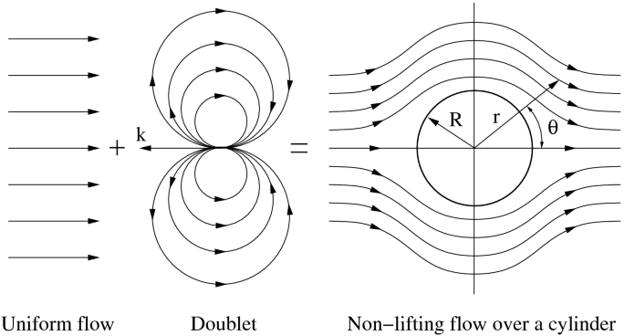
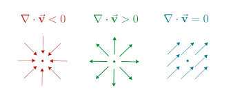
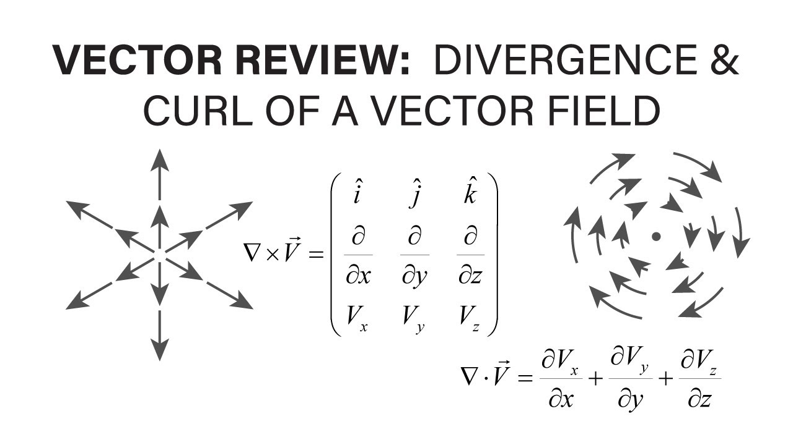
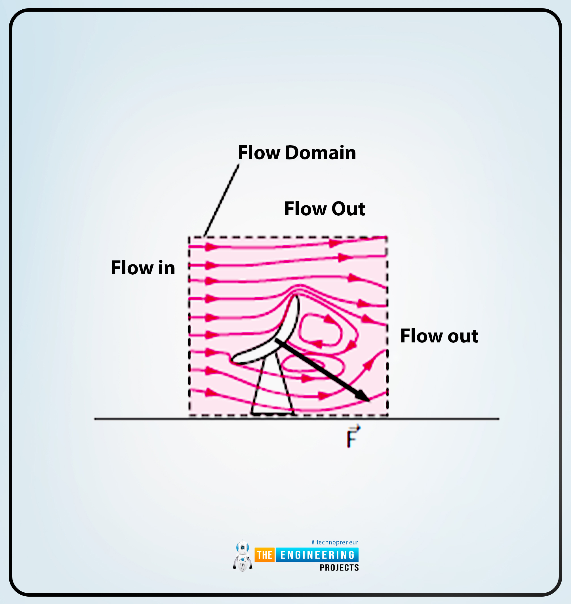
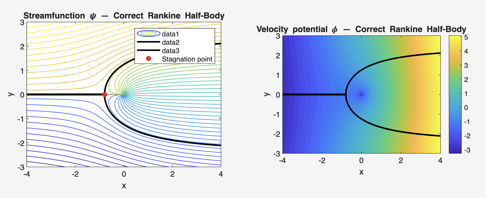
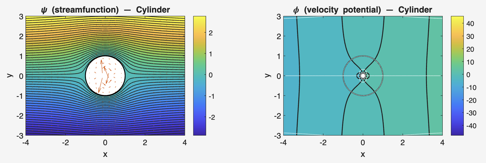
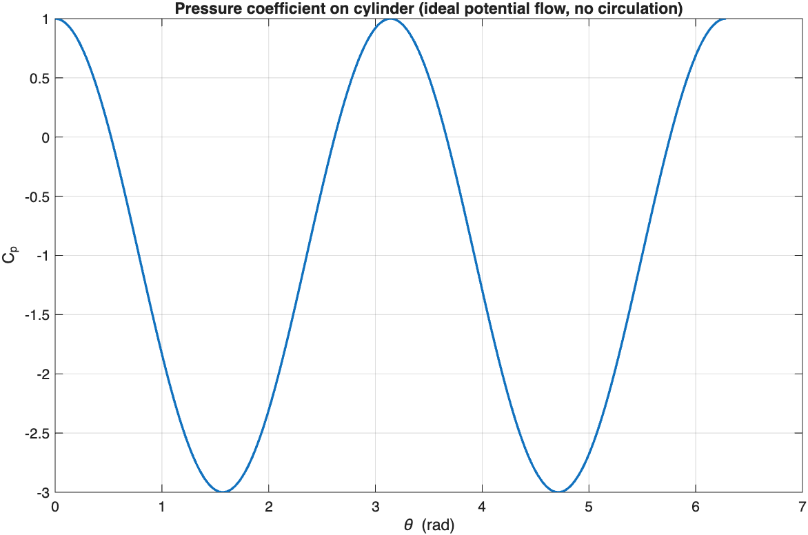

Potential flow relies on vector calculus concepts such as gradients, divergence, and curl.
The flow is modeled using scalar and vector potentials.

Mass conservation
Euler equation for inviscid flow

For irrotational incompressible flow, the velocity can be written as a gradient of a scalar potential.
A stream function can also be used in 2D to represent the flow field.

The power of potential flow comes from superposition.
Simple elementary flows are combined to create realistic flow patterns.



Potential flow gives insight into flow patterns and lift/drag behavior in idealized settings.
It is often used as a starting point before including viscosity and separation effects.
Potential flow provides a simplified but powerful description of inviscid fluid motion.
It is built from scalar potential and stream-function formulations and relies heavily on superposition.
It is a crucial conceptual bridge to more complete viscous-flow theory.